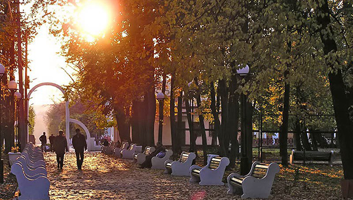
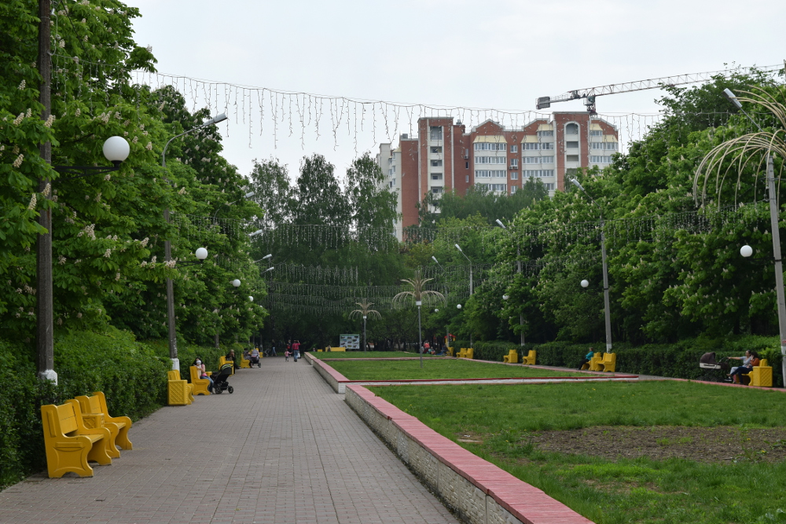

1875 году открылся общественный сад, который знают все серпуховичи, как парк имени Олега Степанова. Главный парк Серпухова назван именем Героя Советского Союза, жителя города, Олега Степанова.
В XIX веке на месте парка находились винные склады и сараи для хранения производимых в Серпухове товаров. А в конце века (1875 год) здесь был разбит общественный сад – с прудом, павильонами и беседками. Центральный городской парк Серпухова получил свое имя в честь уроженца города, героя Великой Отечественной войны Олега Степанова.В память о земляке на главной аллее установлен его бюст.
Парк многолюден в любое время года, здесь установлены зоны отдыха, спортивно-оздоровительные площадки, детский городок, есть декоративный пруд. Кроме того, в парке разместился местный ЗАГС (ДТ Центральный), и по выходным в аллеях всегда можно встретить счастливых молодоженов.Для детей открыты аттракционы, а взрослых ждут массовые гуляния и концерты.
Парк особенно оживает в летнее время. В теплые и жаркие деньки здесь можно выучить несколько новых па в проекте “Танцы в парке”, заняться йогой и фитнесом. Посетить вкусные фестивали!
Рядом с парком находится Музыкально-драматический театр и несколько ресторанных комплексов на его территории.
История парка начинается с 1936 года, когда на его месте был разбит питомник для железной дороги – тут выращивали не только деревья, но и кустарники, однолетние и многолетние цветы. Для содержания лесополос выращивали туи, лиственницы и даже березы. На одной из аллей высадили груши, вишни, яблони и другие плодовые деревья для горожан.
В 70-х годах посадочный материал перестали выращивать и на территории парка появляется аллея героев, с большой клумбой в центре.
Позже парк получает новое название – Детский парк имени Володи Ульянова, однако название не приживается.  Появляются первые аттракционы, качели-лодочки, детские карусели, и воссозданная в наши дни в парке им.Олега Степанова, площадка ЮИД. В 1983 году появляется колесо обозрения.
В настоящее время парк Питомник это семейный центр притяжения горожан. В парке есть развитая инфраструктура аттракционов, аллея, спортивные площадки и поля для занятий спортом. Рядом с фонтаном находится знаменитый бельчатник, где можно покормить пушистых зверушек с руки.
В парке проходят массовые мероприятия для всей семьи, для этого предусмотрена сцена.
Единственное колесо обозрения и ручные белки стали уже визитной карточкой парка и города.
Парк начал свое существование с 2014 года. С того времени здесь появились дорожки для прогулки, удобные лавочки, арт-объекты для влюбленных, домики для отдыха, детская площадка и памятник Петру и Февронии.
Центральная аллея проложена по направлению к Высоцкому монастырю. Этот незабываемый вид, можно увидеть не только на фотографиях горожан, но и на картинах художников!
Принарский парк по праву гордится местоположением и живописными видами. Ведь парк находится на реке Нара с которого открывается незабываемый вид на Высоцкий монастырь и, кажется, что время остановилось.
Парк разбит в 2014 году на месте пустыря. Центральная аллея проложена по направлению к Высоцкому монастырю.
Парк не зря считается семейным. в 2016 году В День семьи, любви и верности здесь установлен памятник святым благоверным Петру и Февронии. Воплотил композицию, выполненную из бронзы, скульптор Илья Дюков и это не единственная его работа в Серпухове.
В парке также есть свадебное дерево, куда пары, которые вот-вот становятся семьями, вешают свои сердечки. Хорошая традиция, которая гласит, что та семья, которая закрепила свое сердце на этом дереве, проведет вечность вместе.
Есть в парке и беседки для отдыха на выходных или празднование свадьбы. Ну и красивая ротонда, на которой тоже висят сердечки возлюбленных.
Принарский парк является еще молодым, сформированным не давно, но расположен на земле с глубоким историческим наследием. Можно не сомневаться, что проект по развитию территории «Принарского Парка» в самом своем начале.
Комсомольский” парк находится в центре города и оснащен зонами отдыха для горожан.
Имеет второе, народное, название, “Парк Динозавров”.
в 1963 году в Серпухове открылась 17-я школа. На территории перед школой серпуховские школьники решили создать парк. Комсомольцы 17-й школы стали сажать деревья. Парк создавался в течение нескольких лет. И название ему решили дать «Комсомольский».
В 2014 году в парке появились массивные фигуры динозавров, так парк получил свое второе название “Парк Динозавров”.
В конце 2017 года Комсомольский парк принял участие в Губернаторской программе «Светлый город» и парк был полностью освещен.
В парке теперь есть скейт площадка для экстремалов, стела “Я люблю Серпухов”, детско-развлекательная зона, лавочки для отдыха и удобная парковка. а центральный вход украшает кованая арка с названием «Комсомольский парк».
Современный городской парк для отдыха на Ногинском пруду.
Оснащен детской площадкой, спортивными сооружениями и комфортными лавочками.
7 июня 2014 года был открыт Парк «Жемчужина».
Бывший больничный парк с 70х годов успел полностью зарасти и в наши дни, превратится в один из любимых парков горожан.
На территории парка есть детская площадка, хоккейная коробка и аллея для отдыха на пруду.
Ногинский пруд обустраивают к летнему сезону, а так же он входит в число официальных мест традиционного крещенского купания.
Этот пруд – самый большой искусственный водоем в городе. Он был создан силами заводчан РТЗ в 60-х годах. Наполняется пруд за счет бьющих ключей.
Рядом располагаются два теннисных корта, футбольное поле, зона пляжного волейбола, баскетбольная площадка, скейт-площадка, рассчитанная на 3 основные дисциплины – это ролики, скейтборд и BMX.